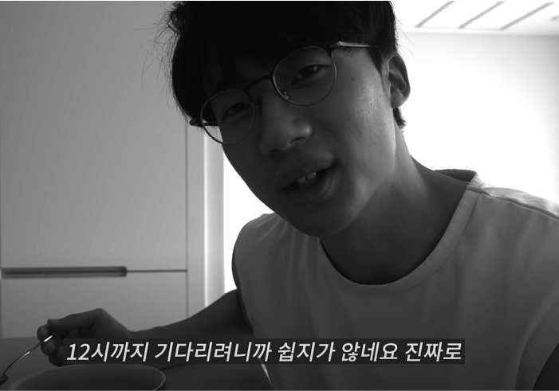

하루에 단 여덟 시간만 먹을 수 있다!
대학교 후배들이 유튜브 채널을 운영하는데 감사하게도 부족한 선배에게 출연을 요청해주었다. 다양한 도전과 자기계발에 대한 이야기를 나누고 마지막으로 제비뽑기를 해서 후배들과 함께 챌린지를 진행해보기로 했다. ‘한 달 동안 외국어 공부하기’, ‘소셜미디어 없이 살기’, ‘카페인 줄여보기’ 등 다양한 선택지 중에서 내가 뽑은 것은 ‘간헐적 단식 챌린지’.
먹는 데 진심인 내가 간헐적 단식이라니? 후배들 앞에서 티는 내지 않았지만 주제를 확인한 순간 눈앞이 아득해졌다. 마른 체형 때문에 많은 사람이 내가 적게 먹을 거라고 오해하지만, 나는 생각보다 대식가다. 맛있는 음식을 찾아 먹는 것은 물론 많이 먹는 것도 좋아한다. 한마디로 세상의 모든 음식을 사랑한다. 그런데 간헐적 단식을 해야 한다니……. 내 손을 원망했지만 이미 약속했으니 겸허히 받아들이기로 했다.
쇠뿔도 단김에 빼라고 당장 다음 날부터 단식을 시작하기로 했다. 다음 날을 위해 일단 후배들과 점심을 든든히 먹고 집으로 돌아와 정보를 찾아보았다. 간헐적 단식이란 하루 중 정해진 시간 또는 일주일 중 정해진 요일에만 식사해 공복을 유지함으로써 체내의 독소를 배출하고 살을 빼는 일종의 식이조절법이다. 간헐적 단식 이전에는 비슷한 식이조절법인 1일 1식이 유행했다. 하지만 하루에 한 끼만 폭식하는 방식이 몸에 부담을 준다는 연구 결과가 나온 후로는 정해진 시간에만 식사하는 간헐적 단식이 더 주목받고 있다.
방법은 요일과 상관없이 열여섯 시간은 단식하고 여덟 시간 동안만 음식을 먹는 ‘16대 8 단식’, 먹는 시간을 극단적으로 줄여 하루 네 시간 동안만 음식을 먹는 ‘20대 4 단식’, 일주일 중 5일은 충분히 먹되 이틀은 식이를 제한하는 ‘5대 2 단식’ 등 다양했다. 시간을 조절하는 방법을 택한다면 아침 식사와 저녁 식사 중 어떤 것을 제한할지도 골라야 한다. 나는 가장 많은 사람이 시도하고 초보자가 하기에도 어렵지 않은 16대 8 방식에서 아침 식사를 거르는 단식을 해보기로 했다. 식사 시간은 12시에서 20시까지로 정했고, 간식은 먹지 않기로 했다.
✔ 목표: 16대 8 간헐적 단식을 실천한다.

먹는 즐거움을 포기하고 얻은 것들
일어나자마자 배가 고팠다. 평소에도 눈만 뜨면 배가 고파 시간이 너무 빠듯하지 않으면 대체로 아침을 챙겨 먹는 편인데, 이제는 먹을 수 있는 게 물밖에 없었다. ‘그래, 내 위에게도 휴식을 좀 주자’라고 생각하며 배고픔을 참았지만 쉽지 않았다. 매일 아침 꼬박꼬박 영양소를 공급받던 내 위도 적응이 안 되는지 계속 꼬르륵 소리가 났다. 그렇게 물로 서너 시간을 버티다가 식사 준비를 모두 마치고 식탁 앞에서 경건한 마음으로 12시가 되길 기다렸다.
11시 59분 57초…… 58초…… 59초…… 12시!
시계가 정확히 12를 가리키자마자 빛의 속도로 밥숟가락을 입에 집어넣었다. 이 얼마나 소중한 식사인가. 오전에 일부러 배를 비웠다가 점심을 먹은 건 거의 처음이었기에 더 맛있었고, 감사한 마음까지 들었다. 하루에 두 끼밖에 먹지 못하니 한 번 먹을 때 많이 먹어야겠다고 생각해 평소보다 밥을 더 많이 펐다. ‘간헐적 단식’이 아니라 ‘간헐적 폭식’이었으므로 올바른 방법은 아니었지만, 오늘이 첫날이었기 때문에 무리하지 않고 차차 식사량을 줄이기로 했다.
저녁 식사까지는 그리 어렵지 않게 기다렸다. 평소에도 군것질을 많이 하는 편은 아닌 데다 점심을 든든히 먹었기 때문에 평소와 비슷한 상태로 저녁 식사 시간을 맞았다. 밤늦게 마시던 맥주도 오늘부터는 금지였으므로 맥주 한 캔도 미리 곁들여 마셨다. 저녁 식사까지 마치니 딱 8시. 한 번도 식사 시간을 신경 써본 적이 없는데 하루 식사가 일찌감치 마무리되었다고 생각하니 배가 불렀는데도 왠지 아쉬웠다. 그렇지만 식사 시간을 조절하는 것만으로 확실히 건강해진 느낌은 들었다.
둘째 날도 역시나 ‘아, 배고파’ 하는 생각과 함께 잠에서 깼다. 공복 상태로 열여섯 시간을 버틴다는 생각만으로도 지루하고 긴 느낌이 들어 이제는 단순하게 ‘점심과 저녁만 먹는다’고 생각하기로 했다. 오전에는 여전히 배가 고파 몸이 배배 꼬였지만 첫날의 경험이 있어서 그런지 버틸 만했다. 그리고 오늘도 열여섯 시간 만에 먹는 점심 식사. 한 끼 한 끼가 더 소중해졌다.
저녁에는 친구를 만나 야구 경기를 보러 갔다. 야구장의 묘미는 바로 ‘치맥’인데 오늘만큼은 시간에 맞춰 반쯤 포기할 수밖에 없었다. 경기 중간인 8시까지 부랴부랴 치킨과 맥주 한잔을 해치우고, 이후로는 나를 유혹하는 맥주보이의 눈길을 애써 외면한 채 깡생수로 아쉬움을 달랬다.
5일 차쯤부터는 공복 상태를 유지하는 일이 점차 익숙해졌다. 평소와 달리 야식을 시키지 않다 보니 오히려 늦은 밤에 음식을 먹는다는 생각만으로도 부담스러웠고, 늦게까지 소화시킬 일이 없어 일찍 잠을 청하기도 했다. 아침에 일어났을 때도 서서히 몸이 가벼워진다는 느낌을 받았다. 야식을 먹고 나면 다음 날 아침에 속이 조금 부대꼈는데 단식한 다음부터는 아무 불편함 없이 아주 개운하고 속이 편했다. 몸에게 소화시킬 시간을 충분히 주어서 그런지 컨디션까지 좋아졌다(물론 배는 여전히 고팠다……).
하지만 이번에도 고비는 어김없이 찾아왔다. 8일 차에는 생일 전날이라고 고향 친구들이 서울까지 찾아왔다. 제주 흑돼지 오겹살을 사주겠다는 친구의 말에 순순히 끌려갔고…… 그렇게 저녁 10시까지 오겹살, 목살, 달걀찜, 된장찌개, 냉면을 아주 신나게 먹어치웠다.
실패는 여기서 끝나지 않았다. 생일 당일에는 서울에 있는 친구들이 찾아왔다. 나는 차마 배달로 치킨과 떡볶이를 주문하는 친구의 손길을 만류하지 못했고…… 그렇게 뭘 먹었는지 정확히 기억하기 어려울 정도로 새벽이 될 때까지 먹고 마셨다.
아, 역시 폭식의 후폭풍은 장난이 아니었다. 이틀 동안 늦게까지 많은 양의 음식을 먹다 보니 몸에서 즉각 반응이 왔다. 잠에서 깼을 때 전혀 개운하지 않았고, 화장실을 다녀와도 간헐적 단식을 지킬 때와는 컨디션이 완전히 달랐다. 예민한 피부는 단 이틀간의 폭식으로 트러블투성이가 되었다.
아침 컨디션은 전날 저녁 식사에 생각보다 많은 영향을 받았다. 밤에 배고픔을 참지 못하고 야식을 먹어 아침에 더부룩한 것보다 배고픔을 느끼더라도 속을 비워주는 편이 기분 좋은 하루를 위해 훨씬 나았다. 이틀간 충분히 일탈을 즐겼으니 남은 기간 동안 다시 가벼운 몸을 느껴보리라 다짐하며 철저한 간헐적 단식을 다짐했다.
간헐적 단식을 하는 동안 대체로 저녁 식사 시간은 7시 반부터 8시였다. 식사 시간이 고정되자 생활 패턴도 일정해졌고 식사 시간 전후로 시간 활용도가 훨씬 높아졌다. 설거지까지 마쳐도 9시 정도로 이른 밤이라 그 이후에는 다른 일에 시간을 썼다.
드디어 간헐적 단식의 마지막 날. 이제 아침의 배고픔도 즐기는 경지에 이르렀다. 의도하지 않았지만, 야식을 먹지 않다 보니 자타공인 면 러버(lover)인 내가 2주 동안 라면도 먹지 않았다는 사실을 깨달았다. 마지막 날을 기념하며 아침 공복의 즐거움을 만끽하고 나서 점심 식사로 잠시 외면했던 만두 라면을 먹었다. 이 깊은 MSG의 맛! 저녁에는 지인을 만나 2주간의 간헐적 단식 간증을 나누면서 피자로 피날레를 장식했다.

더 높은 생산성과 자존감을 얻다
전문가들은 간헐적 단식으로 다음과 같은 건강 효과를 얻을 수 있다고 이야기한다. 먼저 체내 인슐린 수치가 낮아져 저혈당을 예방할 수 있고, 지방이 타는 속도가 빨라지기 때문에 일주일에 4~5회가량 간헐적 단식을 꾸준히 지속하면 체중 조절에 도움을 주어 건강한 몸을 유지할 수도 있다. 소화 기능에 부담을 덜 주므로 소화기관이 튼튼해지는 것은 물론, 소화하는 데 불필요하게 많은 에너지를 쓰지 않게 되어 컨디션이 좋아지고 집중력이 높아진다.
2주라는 짧은 시간이었기 때문에 간헐적 단식의 효과가 실제로 있었는지 확인하기는 어려웠지만, 조금이나마 그 원리는 이해할 수 있었다. 아침의 배고픔은 곧 편안함으로 바뀌었고, 피부도 눈에 띄게 좋아졌다. 함께 도전했던 후배의 말에 따르면 평소 잘 붓는 여성이라면 붓기가 빠지는 경험도 할 수 있다고 한다.
이번 도전에서 건강상의 변화보다 내가 더 긍정적으로 생각한 경험은 식사를 조절한 것만으로 얻은 높은 생산성과 자존감이다. 도전하는 내내 정해진 시간에 식사를 마치고 나면 왠지 모를 성취감이 느껴졌다.
일본의 사상가인 미즈노 남보쿠는 자신의 책 《절제의 성공학》에서 이런 단순한 원리를 다음과 같이 설명한다.
자신이 성공할 것인가를 알고 싶다면 먼저 식사를 절제하고 이를 매일 엄격히 실행해보면 됩니다. 만약 이것이 쉽다면 반드시 성공할 것이고, 그렇지 않다면 평생 성공할 수 없다고 판단하면 됩니다. 식사를 절제할 수 있는 사람은 모든 것을 절제할 수 있습니다.
_ 《절제의 성공학》, 미즈노 남보쿠, 바람, 2013, p. 68
단순히 ‘그깟 먹을 것’을 절제한다고 생각했는데, 나는 그 외의 다른 것도 절제할 수 있는 사람이었다. 《돈의 속성》을 쓴 김승호 회장 역시 이 책을 읽고 항상 소식하며 최상의 컨디션을 유지하기 위해 노력한다고 한다. 식사를 조절하는 것은 내 삶 곳곳에 스며든 무절제한 습관을 바꾸는 시작이었다.
버튼 몇 번만 누르면 오는 배달 음식, 밤늦게까지 문을 연 온갖 식당, 24시간 편의점 등 우리를 유혹하는 음식들은 언제나 곳곳에 도사리고 있다. 낮이든 밤이든 배가 고프면 순간의 만족을 위해 별생각 없이 음식을 찾아 금세 먹을 수 있다. 하지만 그 결과는 어떤가. 편하지 않은 속을 부여잡고 하루 종일 화장실을 들락날락하거나 지금 해야 할 일에 집중하지 못하고 전전긍긍하게 된다. 제때 챙겨 먹기만 하면 그만이라고 생각한 ‘그깟 식사’는 ‘무려 식사’였던 셈이다.

단순히 ‘그깟 먹을 것’을 절제한다고 생각했는데,
나는 그 외의 다른 것도 절제할 수 있는 사람이었다.
짧은 시간이지만 식사를 통제함으로써 얻는 상쾌함을 경험해보니 앞으로 인생에서 나를 방해하는 게 생긴다면 무엇이든 단호하게 끊어낼 용기가 생겼다. 그중에서도 나의 컨디션을 좌우하는 식습관에는 더욱 촉각을 세우고 살아가보려 한다.